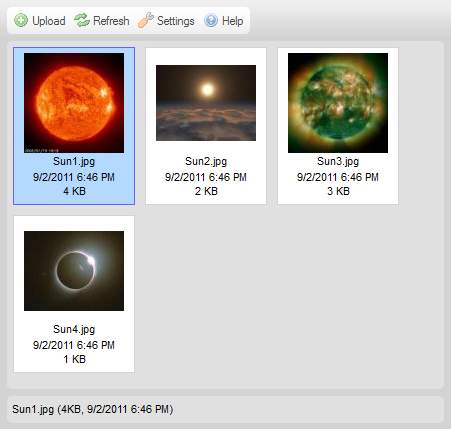
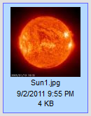
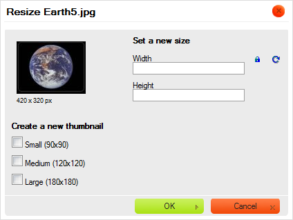

Panel plików pokazuje wszystkie pliki dostępne w wybranym folderze.

Panel plików może prezentować pliki za pomocą jednego z dwóch różnych formatów wyświetlania zależnych od ustawień CKFindera (patrz "Ustawienia "). Poniżej znajduje się porównanie widoków Miniaturek oraz Listy dla tego samego folderu.
Jeśli CKFinder zostanie skonfigurowany by korzystać z widoku Miniaturek (Thumbnails), pliki zostaną wyświetlone w postaci miniaturek (niewielkich podglądów lub ikon), z dodatkowymi informacjami takimi jak nazwa pliku, jego rozmiar lub data modyfikacji bądź bez nich (w zależności od ustawień).
Jeśli CKFinder zostanie skonfigurowany by korzystać z widoku Listy (List), pliki zostaną wyświetlone w postaci listy, z dodatkowymi informacjami takimi jak nazwa pliku, jego rozmiar lub data modyfikacji bądź bez nich (w zależności od ustawień).
W celu aktywowania pliku i uczynienia go "plikiem bieżącym" w CKFinderze należy kliknąć nazwę pliku lub jego miniaturkę. By łatwiej było wybrać plik, kiedy kursor myszy znajdzie się nad plikiem, jego tło zostanie tymczasowo podświetlone. Po aktywowaniu pliku zostanie on na stałe podświetlony za pomocą innego koloru tła.
Poniższy rysunek prezentuje różne stany pliku oglądanego w folderze, od odznaczonego poprzez podświetlony przez najechanie kursorem myszy po aktywowany (wybrany).
 |
 |
W celu odznaczenia pliku należy kliknąć inny plik (tym samym aktywując go) lub kliknąć w dowolne puste miejsce wewnątrz panelu plików CKFindera.
W celu skopiowania pliku do innego folderu należy wybrać plik i przeciągnąć go nad folder docelowy w panelu folderów. Po upuszczeniu pliku nad nazwą folderu docelowego należy wybrać opcję Skopiuj plik tutaj (Copy File Here) z menu kontekstowego.

Plik zostanie zduplikowany, a jego kopie umieszczona będzie w folderze docelowym. Zawartość folderu źródłowego nie zmieni się.

Uwaga: Jeśli plik o tej samej nazwie istnieje już w folderze docelowym, zostaniesz poproszony o wybór pomiędzy nadpisaniem istniejącego pliku a automatyczną zmianą kopiowanego pliku (to drugie jest opcją domyślną).

W celu przeniesienia pliku do innego folderu należy wybrać plik i przeciągnąć go nad folder docelowy w panelu folderów. Po upuszczeniu pliku nad nazwą folderu docelowego należy wybrać opcję Przenieś plik tutaj (Move File Here) z menu kontekstowego.

Plik zostanie usunięty z folderu źródłowego i dodany do zawartości folderu docelowego.

Operacje zaawansowane można wykonywać na pliku za pomocą jego menu kontekstowego. W zależności od okoliczności następujące opcje mogą być dostępne:

Uwaga: Niektóre opcje menu kontekstowego mogą być wyłączone (i tym samym wyszarzone) w zależności od konfiguracji CKFindera ustawionej przez administratora systemu.
W celu wybrania pliku za pomocą menu kontekstowego należy użyć opcji Wybierz (Select). Alternatywnie można również dwukrotnie kliknąć plik za pomocą myszy.
W zależności od środowiska, w którym wykorzystywany jest CKFinder, operacja wyboru może, na przykład, przesłać adres URL pliku do innej aplikacji lub wstawić obrazek bezpośrednio do artykułu tworzonego w systemie CMS.
W celu zobaczenia pliku w przeglądarce internetowej należy wybrać opcję Zobacz (View) z menu kontekstowego. Nie dla wszystkich typów plików można uzyskać podgląd w przeglądarce, jednak opcja ta przydaje się w przypadku obrazków, tekstu oraz plików PDF. W pozostałych przypadkach przeglądarka poprosi Cię o wybór aplikacji do otwarcia pliku.
W zależności od ustawień przeglądarki oraz systemu operacyjnego plik zostanie wyświetlony w nowym oknie przeglądarki lub w nowej zakładce.
W celu pobrania pliku należy wybrać opcję Pobierz (Download) z menu kontekstowego. Przeglądarka zapyta o lokalizację do zapisu pobranego pliku na Twoim komputerze. W zależności od ustawień przeglądarki oraz systemu operacyjnego plik będzie można otworzyć natychmiast po pobraniu za pomocą odpowiedniej aplikacji Twojego komputera.
W celu zmiany rozmiaru obrazka lub jego miniaturki należy wybrać opcję Zmień rozmiar (Resize) z menu kontekstowego. Po wprowadzeniu nowych rozmiarów lub wybraniu wielkości miniaturki należy zamknąć okno dialogowe w celu zapisania zmian.

Jeśli obrazek jest zbyt duży, można zmienić jego wymiary, wprowadzając nowe wartości
do pól Szerokość (Width) oraz Wysokość (Height). Domyślnie
proporcje obrazka są zablokowane, co sygnalizowane jest ikoną  (Zablokuj proporcje). Oznacza to, że jeśli zmienisz jedną z wartości długości
(szerokość lub wysokość), druga zostanie automatycznie dostosowana.
(Zablokuj proporcje). Oznacza to, że jeśli zmienisz jedną z wartości długości
(szerokość lub wysokość), druga zostanie automatycznie dostosowana.
Jeśli chcesz móc swobodnie zmieniać oba wymiary, kliknij ikonę Zablokuj proporcje
w celu jej odblokowania. Ikona ta zmieni siÄ™ teraz w  ,
a zmiana jednego z wymiarów nie pociągnie za sobą automatycznej modyfikacji drugiego.
By ponownie zablokować proporcje obrazka, kliknij ikonę jeszcze raz.
,
a zmiana jednego z wymiarów nie pociągnie za sobą automatycznej modyfikacji drugiego.
By ponownie zablokować proporcje obrazka, kliknij ikonę jeszcze raz.
Dopóki nie zapiszesz zmian, w każdej chwili możesz z łatwością powrócić do oryginalnego rozmiaru pliku, naciskając
ikonę  (Przywróć rozmiar). Spowoduje ona przywrócenie rozmiaru obrazka do
pierwotnej wielkości. Oryginalna szerokość oraz wysokość pojawią się w odpowiednich
polach okna dialogowego.
(Przywróć rozmiar). Spowoduje ona przywrócenie rozmiaru obrazka do
pierwotnej wielkości. Oryginalna szerokość oraz wysokość pojawią się w odpowiednich
polach okna dialogowego.
Po zmianie wielkości obrazka możesz zdecydować się na zapisanie go pod tą samą nazwą, nadpisując istniejący plik. Pamiętaj, że operacji tej nie można odwrócić i po zapisaniu pliku o zmodyfikowanych wymiarach nie będziesz w stanie przywrócić jego oryginalnej wielkości. W celu nadpisania oryginalnego pliku pozostaw pole wyboru Utwórz nowy obrazek (Create a new image) odznaczone.
Możesz również zapisać zmodyfikowany obrazek w nowym pliku i pozostawić oryginał bez zmian. Jeśli
zaznaczysz pole wyboru Utwórz nowy obrazek (Create a new image), będziesz mógł
nadać zmodyfikowanemu obrazkowi nową nazwę. Domyślnie CKFinder sugeruje, by zapisać obrazek pod nazwą
zbudowaną z dotychczasowej nazwy pliku z dodatkiem nowych wymiarów (na przykład: Sun1_100x100.jpg
przy oryginalnym pliku o nazwie Sun1.jpg i zmianie wymiarów do 100 pikseli szerokości
i 100 pikseli wysokości).

Kiedy zmiany są gotowe, kliknij przycisk OK w celu zamknięcia okna dialogowego. Jeśli operacja zmiany rozmiaru obrazka powiedzie się, wyświetlony zostanie odpowiedni komunikat.

Jeśli zmodyfikowany obrazek został zapisany jako nowy plik, w folderze zobaczysz obok siebie obie wersje.

Uwaga: Wymiary oryginalnego obrazka mogą ograniczać opcje dostępne przy zmianie rozmiaru. Zmodyfikowane wymiary obrazka nie mogą być większe od oryginalnych.
Opcję zmiany rozmiaru obrazka można również wykorzystać do wygenerowania pomniejszonych kopii obrazków (miniaturek), których możesz potem użyć w artykułach publikowanych na swojej stronie internetowej lub w postach na blogu. Dzięki opcji zmiany wielkości miniatury administrator strony może ustawić zdefiniowane wielkości miniaturek, które będą potem wykorzystywane przez użytkowników CKFindera. Oszczędzi Ci to konieczności ręcznego wpisywania zmodyfikowanych wartości szerokości i wysokości dla każdego obrazka, a także pozwoli zachować spójne wymiary miniaturek na całej stronie.
W celu użycia jednej ze zdefiniowanych wielkości miniaturki wybierz opcję Zmień rozmiar (Resize)
z menu kontekstowego obrazka. W części Utwórz nową miniaturkę (Create a new thumbnail)
okna dialogowego zaznacz pola wyboru reprezentujące pożądaną wielkość (lub wielkości) miniaturki.
Jeśli operacja zmiany rozmiaru miniaturki powiedzie się, wyświetlony zostanie odpowiedni komunikat.
Obrazki o zmodyfikowanej wielkości zostaną utworzone w tym samym folderze, a nowe pliki otrzymają
nazwy odpowiadajÄ…ce wybranej opcji miniaturki (z przyrostkami _large,
_medium oraz _small dodanymi do oryginalnej nazwy pliku).
Uwaga: Jeśli obrazek jest mniejszy od którejś z dostępnych opcji miniaturek (jak w przykładzie powyżej), niedostępne opcje zostaną wyszarzone.
W celu zmiany nazwy pliku należy wybrać opcję Zmień nazwę (Rename) z jego menu kontekstowego lub użyć klawisza F2. Wpisz nową nazwę pliku w oknie dialogowym, które zostanie wyświetlone, nadpisując obecną nazwę. Po nadaniu plikowi nowej nazwy i zamknięciu okna nazwa pliku zmieni się.

Nie wszystkie znaki mogą być wykorzystywane w nazwach plików oraz folderów ze względu
na ograniczenia systemów, w których działa CKFinder. Wśród znaków, których nie można
użyć w nazwach plików bądź folderów są: \ / :
* ? " <
> oraz |.
Ostrzeżenie: Po zmianie nazwy pliku odnośniki prowadzące do niego i dodane na innych stronach przestaną działać. Z tego powodu należy przy korzystaniu z tej opcji zachować ostrożność.
W celu usunięcia pliku należy wybrać opcję Usuń (Delete) z menu kontekstowego pliku lub użyć klawisza Del. Niezbędne będzie potwierdzenie chęci usunięcia pliku w oknie dialogowym, które zostanie wyświetlone. Po potwierdzeniu intencji i zamknięciu okna plik zostanie usunięty.
Ostrzeżenie: Operacja ta jest nieodwracalna. Po usunięciu pliku nie będziesz mógł go odzyskać.

Ostrzeżenie: Po usunięciu pliku odnośniki prowadzące do niego i dodane na innych stronach przestaną działać. Z tego powodu należy przy korzystaniu z tej opcji zachować ostrożność.